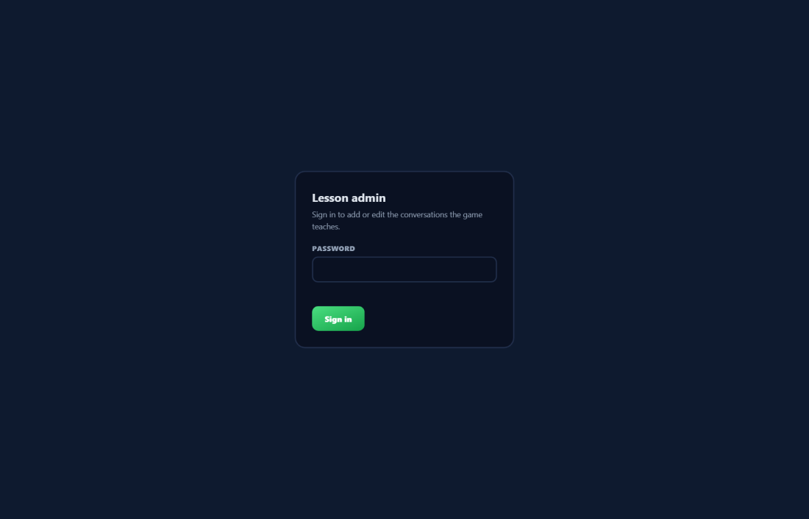
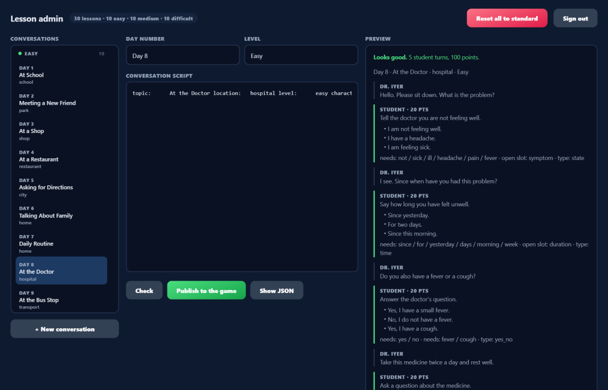

Managing the conversations,
in plain language.
Everything you need to write, check and publish what the game teaches — no code, no developer needed.
The admin page is where the game's conversations are written and published.
Everything below happens at /admin/, next to the game itself.
Sign in
Open /admin/ and enter the admin password. The password is checked by the
server, not the page, so there's nothing to configure in the browser — just sign in and go.

npm run admin:password -- "your password" from the project folder.Find the conversation you want
The list on the left shows every conversation currently in the game, grouped under Easy, Medium and Difficult. Click any of them to load it straight into the editor as plain text — no JSON to read. + New conversation starts a blank one on the next free day.

Write the conversation as plain text
Every conversation follows the same simple pattern: a few header lines, then one block per question. You don't need to know JSON — the page converts this automatically.
topic: At the Library location: school level: medium character: Mrs. Sharma | teacher intro: You want to borrow a book. Ask the librarian for help. vocabulary: borrow, return, shelf, library card npc: Good afternoon. Are you looking for something? ask: Say that you want to borrow a book. ok: I want to borrow a book. ok: I would like to borrow a book, please. key: borrow type: state hint: Try: "I want to borrow a book."
| Line | What it means |
|---|---|
npc: | A line the character says |
ask: | What the student is asked to do |
ok: | An accepted answer — repeat it for every wording you'll take. The first is the model answer shown as the hint |
key: | A required idea. Commas mean "any of these" |
type: | Tunes how the answer is judged — state, question, yes_no, number, time, name, place, closing or request |
hint: | Shown by the Hint button |
Check it, then publish
Check validates the whole conversation and shows the preview panel on the right — exactly what a student will see and hear, with the points and required words worked out for you. Fix anything it flags in red, then press Publish to the game.
Made a mistake? Reset it.
Reset all to standard, top right, undoes any edits made to the 30 standard conversations and restores their original text — useful if something was published by accident. It asks for confirmation first, and never touches a conversation added beyond the standard 30, since there's no "original" for those to go back to.
npm start server — sign in and publish
exactly the same way on either.